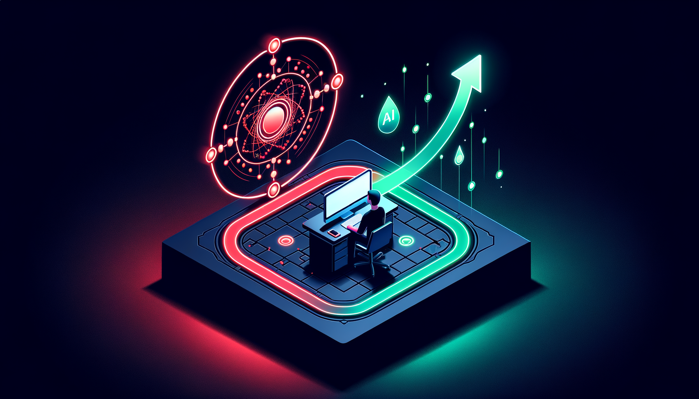
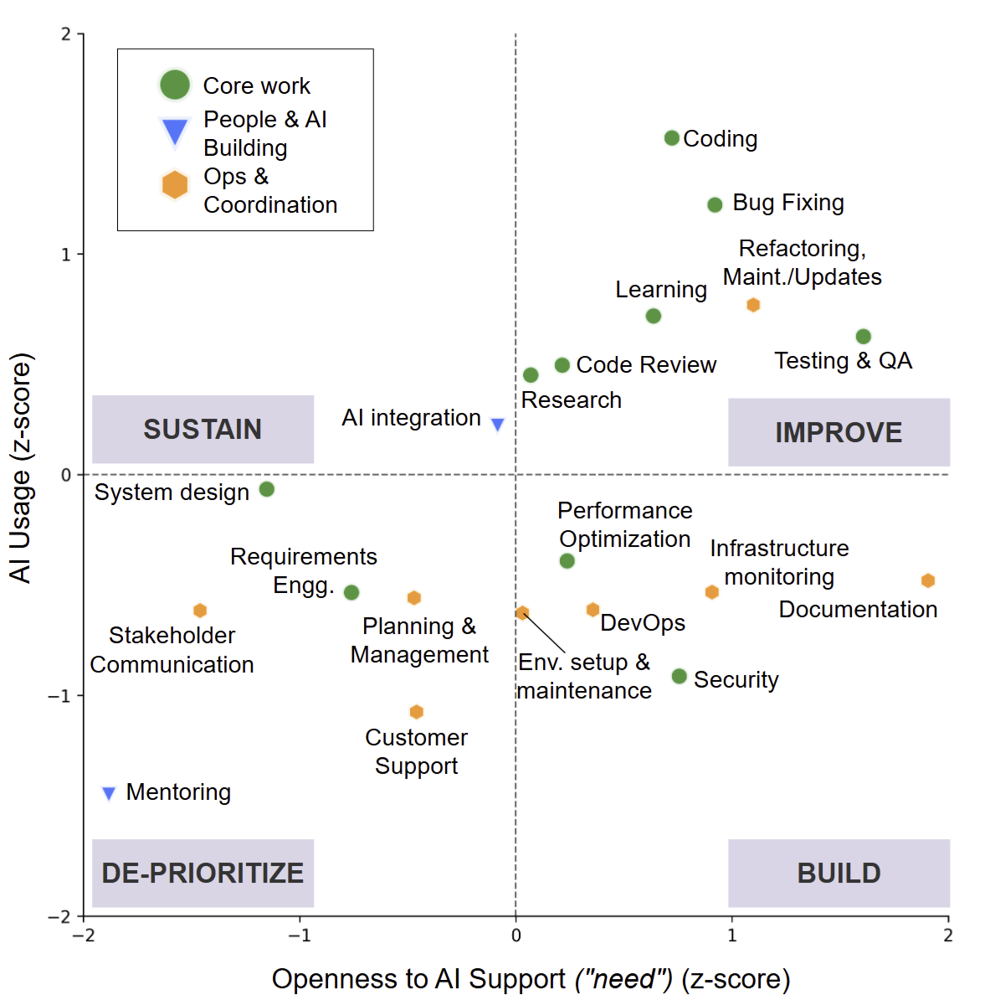
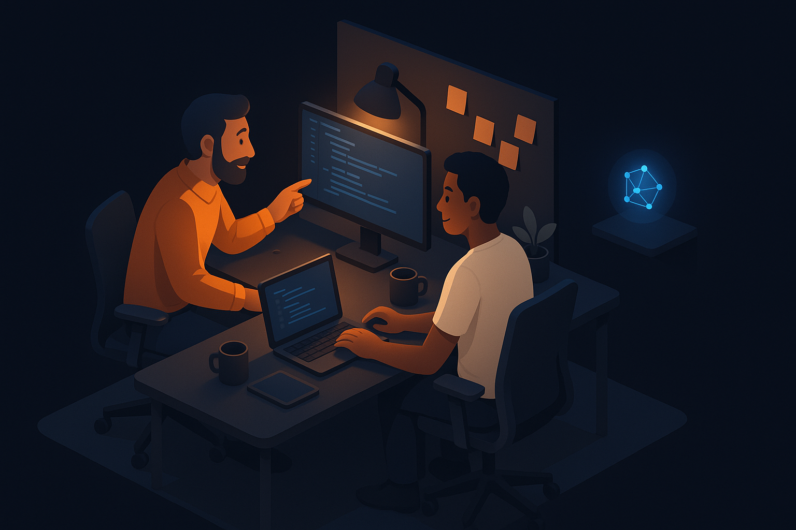
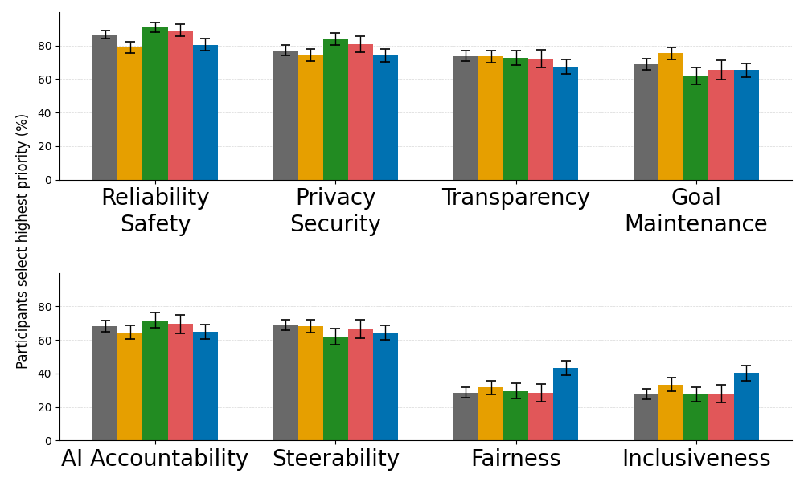
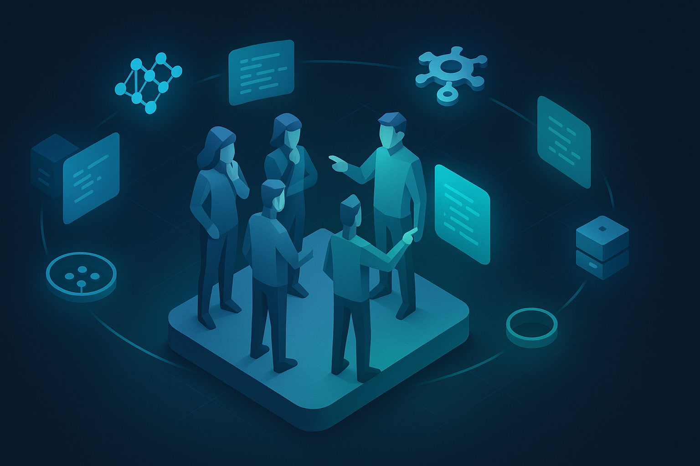

Where, Why, and How Developers Want AI Support in Daily Work
Rudrajit Choudhuri · Carmen Badea · Christian Bird · Jenna L. Butler · Robert DeLine · Brian Houck
Oregon State University | Microsoft
But are they optimizing the right work?
Developers report more flow state — yet less time on the work they value most.
RQ 1
How do developers' task appraisals shape their openness to and use of AI tools?
RQ 2
Which Responsible AI design principles do developers prioritize, and how do priorities vary?
People evaluate events through personal appraisals that shape their emotional and behavioral responses.
We adapt this to understand why developers seek or resist AI for different tasks.
Value
How important is this task to my goals?
Identity
How central is this to who I am as a developer?
Accountability
Am I personally responsible for the outcome?
Demands
How cognitively or emotionally taxing is this?
| Category | Tasks |
|---|---|
| ⚙️ Development | Coding/Programming · Bug Fixing/Debugging · Performance Optimization · Refactoring & Maintenance/Updates · AI Integration |
| 📐 Design & Planning | System Design · Requirements Engineering · Project Planning & Management |
| 🛡️ Quality & Risk Mgmt | Testing & Quality Assurance · Code Review/Pull Requests · Security & Compliance |
| 🖥️ Infrastructure & Ops | DevOps (CI/CD) · Environment Setup & Maintenance · Infrastructure Monitoring · Customer Support |
| 📚 Meta-work | Documentation · Client/Stakeholder Communication · Mentoring & Onboarding · Learning · Research & Brainstorming |
All four appraisal dimensions significantly predict both openness to AI and current AI usage.
Ordinal mixed-effects regression, controlling for role, experience, and task random effects.
Value
Higher value → more open to AI
Identity
Dual effect: protect craft, yet augment
Accountability
Responsible → want AI backup
Demands
Higher load → seek AI relief
Developers guard tasks central to their identity — but use AI more on those same tasks to sharpen their craft.

"I don't want AI writing code for me. That's the part I enjoy."
— P110
"AI should enhance engineers' learning, not replace growth tasks."
— P16
C1 · CORE WORK
Coding · Debugging · Testing · Code Review · System Design
High value & demands · Strong AI appetite
→ AI as collaborator
C2 · PEOPLE & AI-BUILDING
Mentoring · AI Integration · Collaboration
High identity · Relational & craft-based
→ AI largely resisted
C3 · OPS & COORDINATION
DevOps · Env Setup · Documentation · Customer Support
Low identity · High demands · Toil-heavy
→ Automate the grunt work

Tasks in the Build quadrant have high need but low current usage — the biggest opportunity gap.
But: retain oversight · decision control · preserve craft
"Anything that touches prod stays behind human gates."
— P165
Determinism · Verifiability · Human-gated
Mentoring is about relationships, not information transfer. AI integration is craftwork.
"Relationships are important."
— P85
"Mentoring teaches the mentor as well."
— P228

Augment
Core Work
High value + identity
= AI as partner
Automate
Ops & Coordination
Low identity + high demands
= delegate toil
Resist
People & AI-Building
High identity + relational
= keep human
Appraisal signatures determine where AI belongs on the spectrum.

Systems-facing: Reliability & Safety (85%), Privacy (77%) | Human-facing: Fairness elevated
Task-Aware Personas
Exploration vs. implementation vs. review vs. ops modes. Adapt AI behavior to task context.
Human-Gated Control
Suggest-only flows, reversible changes, approval checkpoints. Never automate silently.
Augmentation, Not Automation
Preserve craft, reveal reasoning, prevent deskilling. Keep humans in the loop.
Preserve agency. Foster expertise.
Sustain meaningful work.
📄 Interactive diagrams, per-task reports & chat with the research: aka.ms/AI-Where-It-Matters
